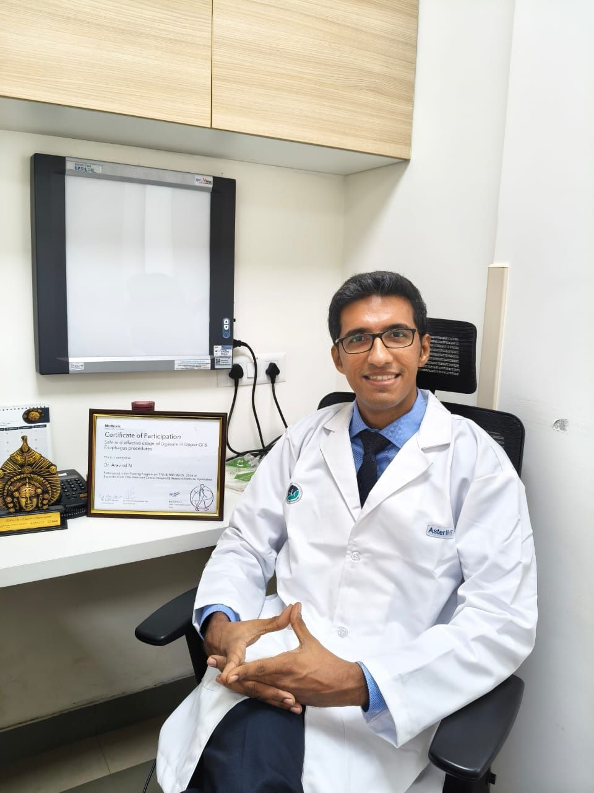

Expert Surgical Oncology at The Nursing Home, Mangaluru. Clinical precision combined with compassionate care — guiding you through every step of cancer recovery.

Surgical Oncologist · Mangaluru, Karnataka
Dedicated, compassionate surgical oncologist with vast experience in diagnosing, investigating and treating adult and paediatric oncology. Skilled surgeon with experience of operating major cases and minimally invasive surgeries — bringing hope to patients across Mangaluru and beyond.
Breast conservative surgery preserving the breast. Sentinel lymph node biopsy — avoids arm swelling compared to the conventional technique.
Precision surgical treatment for lung, esophageal, and chest wall cancers with focus on minimal disruption.
Minimally invasive / laparoscopic surgery — avoids large scars, less pain and fast recovery. Comprehensive care for stomach, colon, liver and pancreatic malignancies.
Surgical care for oral, throat, thyroid and parotid tumors. Thyroid surgery under microscope to preserve voice. Parotid surgery under microscope for facial aesthetics.
Minimally invasive / laparoscopic uterine cancer surgery. Sentinel lymph node biopsy using infrared camera — prevents long-term limb swelling. Advanced care for ovarian and cervical cancers.
Laparoscopic and robotic-assisted surgical options for faster patient recovery and reduced downtime.
Precision biopsies and treatment access procedures (chemoports) for patients undergoing therapy.
Second opinions, comprehensive screenings, and multidisciplinary treatment planning sessions.
Every surgery is a story of courage. These are some of the patients whose lives were transformed through expert surgical oncology care.
Complex ovarian tumor removal demands surgical precision, especially in elderly patients where risk is highest. The results speak for themselves.
An 80-year-old patient presented with a large ovarian tumor — a high-risk case requiring extraordinary surgical care. After successful surgery, she recovered remarkably well.
Restoring function and quality of life after major head and neck cancer surgery — eating normally, speaking clearly, and living fully.
Treated oral cancer patient demonstrating remarkable recovery — able to eat and speak with near-normal function restored after surgery.
A demanding surgery where one half of the lower jaw was removed to achieve complete cancer clearance. Through expert surgical reconstruction, the patient regained the ability to eat and speak normally.
Basal cell carcinoma over the nose excised and the defect reconstructed using a local tissue flap.
"An outstanding surgeon whose approach is always patient-oriented. Highly recommended for anyone seeking skilled and empathetic cancer care!"
— Dr. Chitra Tiwari"Very good surgeon. Humble doctor. Made me feel at ease throughout the treatment journey. Thank you!"
— Nawaz Nawa"Listens patiently and gives confidence throughout the treatment. A doctor who truly cares about his patients."
— Shreesha KumarSurgical oncologists have specialized training in biopsies and complex tumor removals, focusing specifically on the biological behavior of cancers during surgical planning to ensure complete clearance.
Yes, we often work in a multidisciplinary team. Surgery may be preceded or followed by chemotherapy or radiation therapy (adjuvant/neoadjuvant therapy) to maximize treatment effectiveness.
Please bring all pathology reports, biopsy results, imaging scans (CT/MRI/PET films and CDs), and a detailed history of your current medications and medical history.
Post-operative surveillance is vital. We monitor patients closely to manage recovery and screen for any signs of recurrence — your long-term health is our priority.
Laparoscopic (keyhole) surgery uses small incisions and a camera rather than large cuts. Benefits include less pain, smaller scars, shorter hospital stay, and faster return to daily activities — without compromising on cancer clearance.
Nursing Home, Kankanady Bypass Rd, Bendoorwell, Upper Bendoor, Mangaluru — 575002